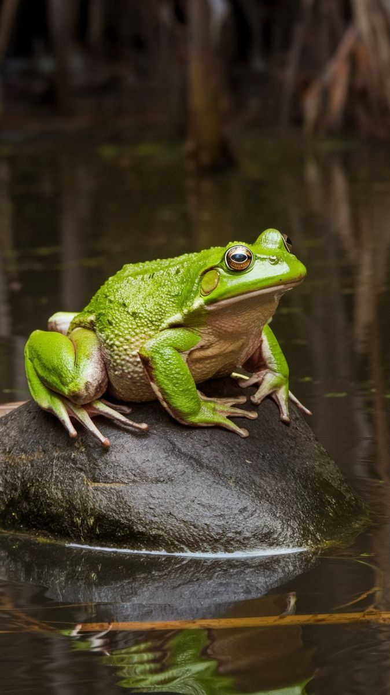

Kodok adalah hewan amfibi yang hidup di air dan di darat. Tubuhnya kecil, kulitnya lembap, dan suaranya khas saat malam hari. Kodok membantu mengendalikan populasi serangga karena makanannya adalah nyamuk, lalat, dan hama kecil. Keberadaan kodok juga menandakan lingkungan yang bersih dan sehat. Beberapa jenis kodok bahkan diteliti karena kulitnya menghasilkan zat antibakteri alami. Menjaga habitat kodok berarti menjaga keseimbangan alam. 